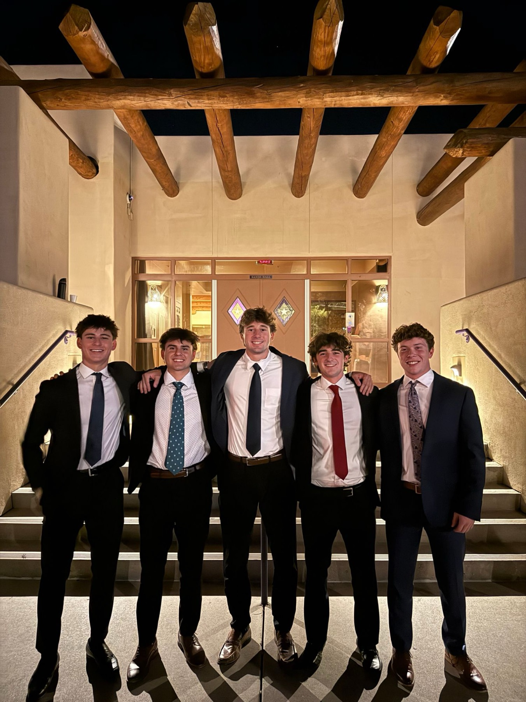

About
I spent fourteen years training for a job I will never have.
I grew up in Scottsdale planning to be a professional footballer, and for a while that was a reasonable plan. I captained at Phoenix Rising Football Club, played center back, and balanced semi-professional competition against a full course load without letting either one slip.
Then it ended, in the way these things usually end — quickly, and not on my schedule. What followed was the most instructive stretch of my life: several months with no obvious next move, which is a situation I would recommend to nobody and would not trade.
What I found in finance was the same thing that had kept me in sport. Both reward preparation over talent, and both are decided by people who can stay level when the result is already going badly. The difference is that in finance the stakes belong to somebody else — which I think is the part I am still learning to carry properly.
Today I am a finance major at the University of Arizona's Eller College of Management, carrying a 4.0 while serving as Vice President and Treasurer of Phi Gamma Delta, where I direct a $1.3 million budget for more than 150 members. I co-founded Delta Capital Markets, a student-managed fund, and I am SIE certified. This coming summer I join J.P. Morgan Private Bank as a summer analyst.
Away from the desk I cold plunge more than is strictly reasonable, cook Italian food badly but enthusiastically, follow European soccer, read military and naval aviation history, and snowboard in Flagstaff whenever the Arizona winter permits it.
Vice President / Treasurer of Phi Gamma Delta
The chapter executive board. I direct the budget and report to these four on it.

Chapter budget I direct, with transparent financial tracking I put in place
Members whose dues, housing and events run through it
Committees I allocate against and keep compliant
It is the closest thing I have had to managing somebody else's money, and the part that transfers is not the spreadsheet. It is telling a room of a hundred and fifty people why the answer is no.
The short version, on paper
Readable right here. Downloadable if you would rather keep a copy.
![Resume of Mickey Chapple. University of Arizona, Eller College of Management, BSBA in Finance, May 2028, GPA 4.0, Dean's List with Distinction, Sands Scholarship, Wildcat Excellence Award, SIE and Bloomberg Market Concepts certified. Professional experience: Clean Eatz sales associate, DM Brown Financial Services summer analyst, Jamba Juice team member. Leadership: Phi Gamma Delta Vice President and Treasurer managing a 1.3 million dollar budget for 150 members, Delta Capital Markets co-founder and fund director, Investments Club member, Phoenix Rising Football Club team captain. The full text is available in the downloadable PDF.](assets/resume-page-1.png)